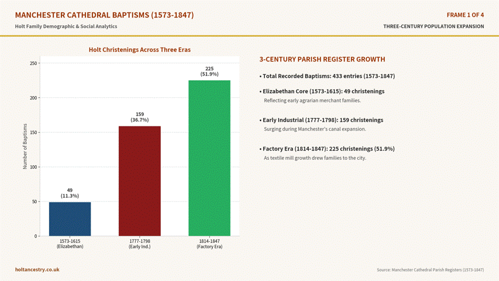
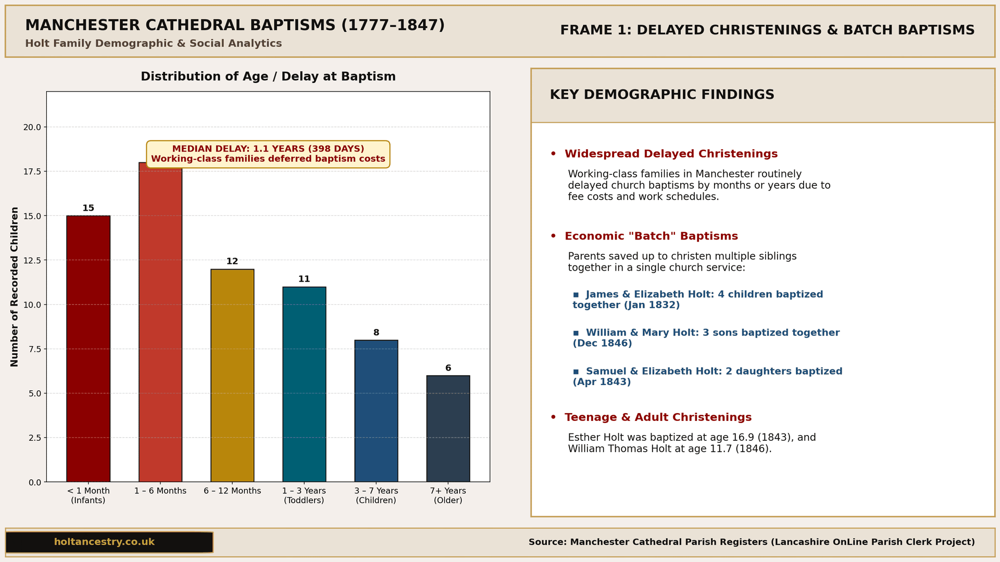
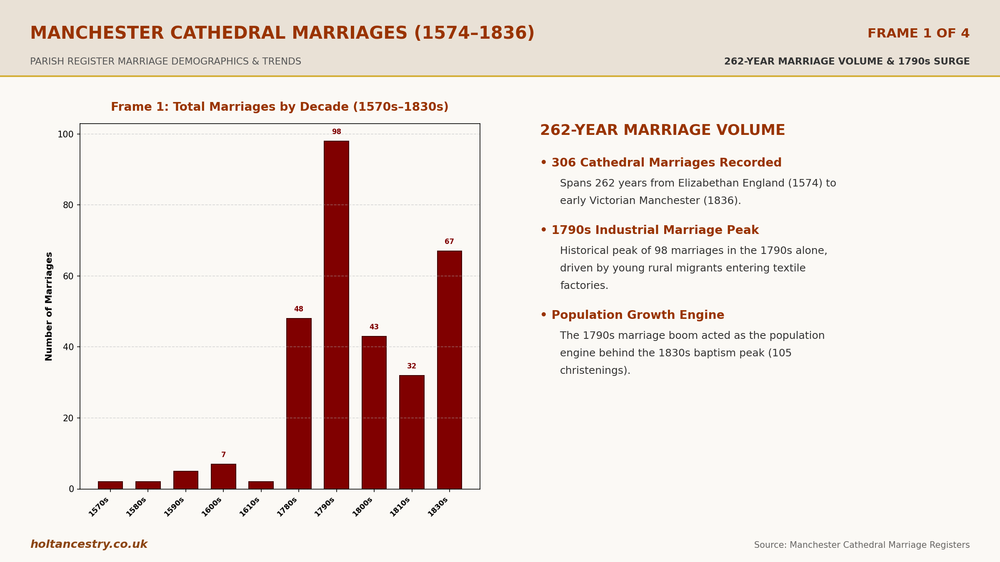
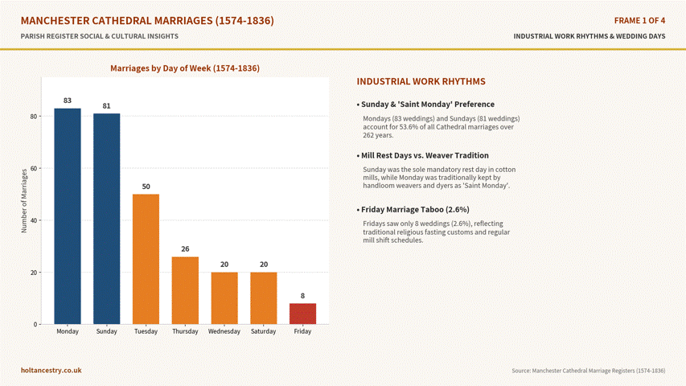

Manchester Cathedral – Holt Baptisms & Marriages Analytics
Collegiate Church of St Mary, St Denys and St George, Manchester
Manchester Cathedral provides one of the clearest windows into how Holt families moved, worked,
and grew during the long arc of Manchester’s industrial transformation. Across three centuries,
the baptisms and marriages recorded here show population expansion, surname standardisation,
occupational change, and the reshaping of family structures under industrial pressures.
Baptisms – General Analytics (1573–1847)
Frame 1 — Three‑Century Population Expansion (1573–1847)
A 274‑year bar chart tracks Holt baptisms across three major eras, revealing how the family’s
presence grew from early parish roots into the dense urban population of industrial Manchester.
The long upward trend mirrors the city’s shift from market town to manufacturing centre.
Frame 2 — Surname Spelling Evolution (Hoult → Holt)
A horizontal distribution chart shows the surname’s transition from oral Lancashire variants
to standardised spelling. Early entries preserve phonetic forms such as Hoult
and Holte, but by the 1700s–1800s, 93.5% of all baptisms adopt
the modern Holt spelling.
Frame 3 — Popular Given Names & Gender Balance
Dual‑colour rankings highlight naming patterns across the centuries, with male and female names
clearly separated. The dataset shows stable gender balance and recurring family naming traditions
that persisted through the industrial period.
Frame 4 — Maternal Surnames & Middle‑Name Customs (1780s–1840s)
A timeline callout illustrates how Holt families used maternal surnames as middle names — a practice
that preserved kinship ties during rapid urbanisation. Names such as Fleetwood,
Ashurst, Makin, and Aspinall appear as markers
of maternal lineage.

Source:
Lancashire Online Parish Clerks – Manchester Cathedral Baptisms
Manchester Cathedral Social Insights for Holt Families
Frame 1 — Delayed Christenings & Batch Baptisms
The dataset shows a median christening delay of 1.1 years, with several families
baptising multiple children together. The most striking example is James & Elizabeth Holt,
who baptised four siblings in January 1832, reflecting industrial work rhythms and
household pressures.
Frame 2 — Father Trades & Industrial Diversity
Over 80 distinct occupations appear in the baptism registers, ranging from traditional
trades (weavers, dyers) to emerging industrial roles (machine makers, boiler makers, clerks). This
occupational spread charts the Holt family’s movement into Manchester’s expanding industrial economy.
Frame 3 — Large Industrial Nuclear Households
Sibling‑group analysis reveals substantial household sizes typical of early‑industrial Manchester.
Leading families include:
- James & Elizabeth Holt — 14 children
- John & Mary Holt — 11 children
- John & Sarah Holt — 10 children
These large households formed the demographic backbone of the city’s early industrial workforce.
Frame 4 — Single Mothers & Maternal Surnames
Single‑mother baptisms account for 11.1% of Holt entries, with maternal surnames
frequently used as middle names to preserve lineage. This pattern provides insight into social
support structures and naming customs among working families.

Source:
Lancashire Online Parish Clerks – Manchester Cathedral Baptisms
Manchester Cathedral – Holt Marriage Analytics (1574–1836)
Across 262 years, the Cathedral registers record 306 Holt marriages, with an almost
perfect gender balance: 135 Holt brides (44.1%) and 134 Holt grooms (43.8%).
Only four Holt‑to‑Holt marriages appear, showing rare endogamy. The data captures the
demographic shock of the Industrial Revolution, the stabilisation of surname spelling, and the formation
of kinship networks across Manchester’s artisan and labouring families.
Frame 1 — 262‑Year Volume & the 1790s Industrial Boom
A bar chart shows marriage volumes by era, with the 1790s peak of 98 weddings marking
the decade when young migrants flooded into Manchester’s mills and dye works. This surge directly
precedes the 1830s baptism peak (105 christenings) and the rise of Holt businesses
recorded in the 1829 Pigot Directory.
Frame 2 — Surname Spelling Variations & Orthography
Surname analysis shows 286 Holt entries (93.5%), alongside 18 Hoult
and 2 Holte variants. Early Elizabethan registers preserve phonetic spellings, but
by the 18th century the spelling stabilises as literacy and parish record‑keeping improve.
Frame 3 — Top Intermarriages & Endogamy
A ranked chart highlights allied families frequently marrying into the Holts:
Taylor, Hilton, Hall, Hulme,
Warburton, Jackson, Smethurst, Ogden,
Kay. Four Holt‑to‑Holt marriages appear, including
Joseph Holt & Mary Holt (1792) and
William Holt & Hannah Holt (1802).
Frame 4 — Gender Balance & Workforce Context
Marriage entries record trades such as weaver, dyer, spinner, shoemaker, and labourer, showing the
industrial occupations of Holt grooms and their spouses. Several widowed artisans remarry, reflecting
how families rebuilt household stability amid demanding industrial working conditions.

Source:
Lancashire Online Parish Clerks – Manchester Cathedral Baptisms
Deep Social & Cultural Insights from the Marriages
Frame 1 — Industrial Work Rhythms: Sunday & “Saint Monday” Weddings
Weekday analysis across 262 years shows that Mondays (83 weddings) and
Sundays (81 weddings) account for more than half of all Holt marriages.
These patterns reflect industrial work rhythms: Sunday as the only guaranteed rest day in
cotton mills, and Monday observed by weavers and dyers as “Saint Monday”.
Fridays record only 8 weddings, the lowest count in the dataset.
Frame 2 — Marriage Seasonality: Harvest Peaks vs. Lenten Restraint
Monthly distributions reveal strong seasonal patterns. October (34 marriages)
and August (33 marriages) peak during Rushbearing fairs and agricultural
harvests. In contrast, March drops to 12 marriages, showing clear adherence
to Lenten fasting restrictions before Easter.
Frame 3 — Geographical Migration & Cross‑Parish Connections
Residence data highlights 38 marriages involving Salford residents crossing
the River Irwell to marry at the Cathedral. Additional cross‑parish ties link Holt marriages
to Rochdale and Eccles, illustrating regional mobility,
kinship spread, and the Cathedral’s role as a central marriage hub for Greater Manchester.
Frame 4 — Puritan Virtues, Rare Forenames & Marital Status
Marital‑status charts show 85.9% first‑time marriages and
6.9% widowed remarriages, reflecting how families rebuilt household support
networks. Rare virtue and biblical names appear throughout the registers — including
Silence Holt, Sampson Holt, Clementina,
Levina Harriotte, and Lois — alongside
four Holt‑to‑Holt endogamous unions.

Source:
Lancashire Online Parish Clerks – Manchester Cathedral Baptisms